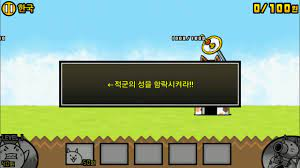

The Battle Cats played by Seungmin
hello? I am Seungmin Hong who likes to play games.
Today, I will tell you how to easily break The Battle Cats.

If you are starting The Battle Cats for the first time, you will see this screen when you install The Battle Cats and run it.
In this case, you can upgrade the money while doing what you are told to do, and press the launch OK button when the line is pushed.
Please upgrade evenly on the power-up screen and do the Cats Draw, Rare Draw, and Event Draw, and don't go if something pops up.
If you have any difficulties, you can watch the strategy video on YouTube.
And basically, all the treasures in all stages (except Legend Stage and Cats Dojo) must be of the highest quality. Otherwise, it will be very difficult to break Nyanko.
And it's easier if you combine a strong nyanko with the enemy character on the stage.
If you Want to See links Under this paragraph use translation
thank you.